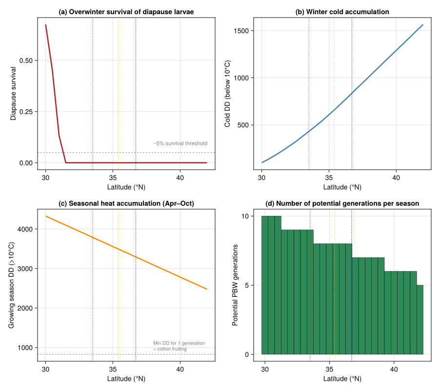
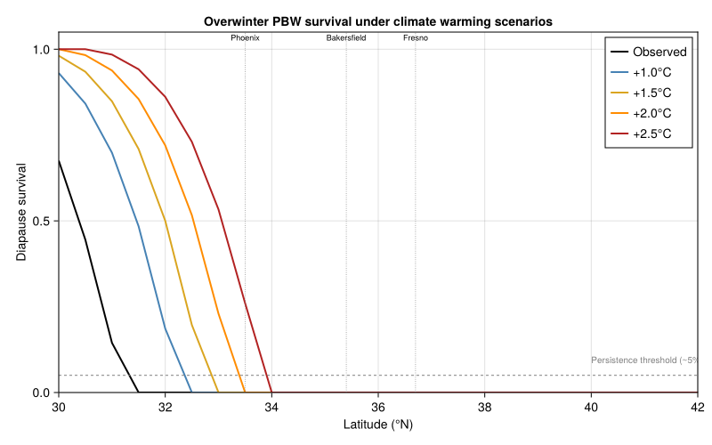
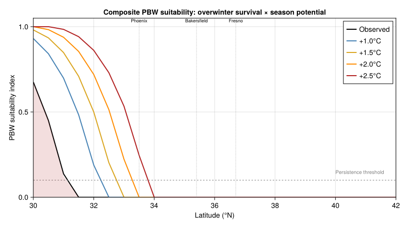

Pink Bollworm Climate Limits
Simon Frost
- Background
- Temperature-Dependent Development
- PBW Life Stage Structure
- Diapause Induction by Photoperiod
- Cold Mortality of Diapause Larvae
- Cotton Phenology Synchrony
- Arizona vs. California Climates
- Seasonal Population Dynamics
- Visualizing Development Potential Across Latitudes
- Climate Warming Scenarios
- Northern Range Boundary
- Policy Implications
- Parameter Sources
- Summary
- References
Primary reference: (<span class="nocase">Gutierrez et al.</span> 2006).
Background
Pink bollworm (Pectinophora gossypiella (Saunders), PBW) is a major pest of cotton (Gossypium hirsutum L.) worldwide, thought to be of Indian or Papua New Guinea–North Australian origin. In the United States, PBW invaded the cotton-growing regions of Arizona and the desert valleys of Southern California more than 40 years ago, generating sustained concern that its range could extend into the southern Central Valley of California where the bulk of US cotton is grown.
PBW larvae bore into cotton bolls, feeding on developing seeds and lint. A single maturing boll can host up to 15 larvae, and four to five summer generations occur annually in Arizona and Southern California. Yield losses from PBW are severe: heavily infested bolls produce degraded lint and reduced seed viability. The economic stakes prompted a USDA area-wide eradication program using the sterile insect technique (SIT), adult trapping, pheromone mating disruption, and late-season plowing. When eradication proved infeasible, the program shifted to containment, costing Central Valley farmers approximately $5 million per year in self-imposed levies. The introduction of transgenic Bt cotton in Arizona (1996) and Southern California (1999) added another tool for PBW management.
The key biological insight — confirmed by the PBDM analysis of Gutierrez et al. (2006) — is that overwinter survival of diapause larvae as affected by low temperatures is the primary factor restricting PBW’s geographic range. Diapause is induced by the combination of decreasing photoperiod and declining temperatures in late summer and fall (Gutierrez et al. 1981, 1986). Only 3–7% of diapause larvae typically survive winter in Arizona (Bariola 1984), and most spring-emerging adults appear before cotton fruit are available, further reducing effective reproduction.
This vignette builds a physiologically based demographic model of PBW using PhysiologicallyBasedDemographicModels.jl to explore how temperature-driven development, photoperiod-mediated diapause, and cold winter mortality establish the climatic limits of this pest across Arizona and California.
Reference: Gutierrez, A.P., D’Oultremont, T., Ellis, C.K. and Ponti, L. (2006). Climatic limits of pink bollworm in Arizona and California: effects of climate warming. Acta Oecologica 30:353–364.
Temperature-Dependent Development
PBW development follows a linear degree-day model with a lower threshold of 10 °C (Gutierrez et al. 2006, Appendix). The cotton host plant has a lower threshold of 12 °C. Development rates are computed as degree-days (DD) accumulated above the threshold using the sine method for daily max–min temperatures.
using PhysiologicallyBasedDemographicModels
# --- Pink bollworm development parameters ---
const PBW_T_LOWER = 10.0 # °C — lower developmental threshold (Appendix A.1, p. 362)
const PBW_T_UPPER = 35.0 # °C — upper developmental threshold [assumed; not in paper]
# --- Cotton development parameters ---
const COTTON_T_LOWER = 12.0 # °C — lower threshold for cotton (Appendix A.1, p. 362)
const COTTON_T_UPPER = 40.0 # °C — upper threshold [assumed; not in paper]
# Development rate models
pbw_dev = LinearDevelopmentRate(PBW_T_LOWER, PBW_T_UPPER)
cotton_dev = LinearDevelopmentRate(COTTON_T_LOWER, COTTON_T_UPPER)
# Degree-day accumulation comparison
println("Daily degree-day accumulation at representative temperatures:")
println("="^60)
println(" T (°C) | PBW (>10°C) | Cotton (>12°C)")
println("-"^60)
for T in [8.0, 10.0, 12.0, 15.0, 20.0, 25.0, 30.0, 35.0]
dd_pbw = degree_days(pbw_dev, T)
dd_cot = degree_days(cotton_dev, T)
println(" $(lpad(T, 5)) °C | $(lpad(round(dd_pbw, digits=1), 6)) DD | $(lpad(round(dd_cot, digits=1), 6)) DD")
endDaily degree-day accumulation at representative temperatures:
============================================================
T (°C) | PBW (>10°C) | Cotton (>12°C)
------------------------------------------------------------
8.0 °C | 0.0 DD | 0.0 DD
10.0 °C | 0.0 DD | 0.0 DD
12.0 °C | 2.0 DD | 0.0 DD
15.0 °C | 5.0 DD | 3.0 DD
20.0 °C | 10.0 DD | 8.0 DD
25.0 °C | 15.0 DD | 13.0 DD
30.0 °C | 20.0 DD | 18.0 DD
35.0 °C | 25.0 DD | 23.0 DDPBW Life Stage Structure
PBW has four immature stages (egg, four larval instars, pupa) plus the reproductive adult. Each stage is modeled as a distributed delay population using the Manetsch/Vansickle k-substage framework. The parameter k = 45 was chosen by Gutierrez et al. (2006) to produce a roughly normal distribution of developmental times.
The two-dimensional distributed delay used in the original model tracks larval cohorts simultaneously by their own age and the age of the host fruit they infest (Stone and Gutierrez 1986). Here we present the one-dimensional life-stage structure for clarity.
k = 45 # Number of substages (Appendix, after Eq. A4, p. 362)
# --- Developmental time requirements (degree-days above 10°C) ---
# Stage durations from Gutierrez et al. (1977) and Stone & Gutierrez (1986)
const DD_EGG = 62.0 # Egg development: ~62 DD
const DD_LARVA = 204.0 # Larval development: ~204 DD (all instars combined)
const DD_PUPA = 148.0 # Pupal development: ~148 DD
const DD_ADULT = 180.0 # Adult reproductive lifespan: ~180 DD [assumed]
# --- Background mortality rates (per degree-day) ---
# [assumed; background rates not specified in Gutierrez et al. 2006]
const MU_EGG = 0.002
const MU_LARVA = 0.001
const MU_PUPA = 0.001
const MU_ADULT = 0.003
# Construct the distributed delay for each life stage
egg_delay = DistributedDelay(k, DD_EGG; W0=0.0)
larva_delay = DistributedDelay(k, DD_LARVA; W0=0.0)
pupa_delay = DistributedDelay(k, DD_PUPA; W0=0.0)
adult_delay = DistributedDelay(k, DD_ADULT; W0=0.0)
# Life stages
egg_stage = LifeStage(:egg, egg_delay, pbw_dev, MU_EGG)
larva_stage = LifeStage(:larva, larva_delay, pbw_dev, MU_LARVA)
pupa_stage = LifeStage(:pupa, pupa_delay, pbw_dev, MU_PUPA)
adult_stage = LifeStage(:adult, adult_delay, pbw_dev, MU_ADULT)
pbw = Population(:pink_bollworm, [egg_stage, larva_stage, pupa_stage, adult_stage])
# Summarize stage structure
println("Pink bollworm life stage structure:")
println("="^65)
for stage in pbw.stages
σ² = delay_variance(stage.delay)
σ = sqrt(σ²)
println(" $(rpad(stage.name, 8)): τ = $(stage.delay.τ) DD, " *
"k = $(stage.delay.k), σ = $(round(σ, digits=1)) DD, " *
"μ = $(stage.μ) DD⁻¹")
end
println("\nTotal generation time: $(DD_EGG + DD_LARVA + DD_PUPA) DD (egg → adult emergence)")Pink bollworm life stage structure:
=================================================================
egg : τ = 62.0 DD, k = 45, σ = 9.2 DD, μ = 0.002 DD⁻¹
larva : τ = 204.0 DD, k = 45, σ = 30.4 DD, μ = 0.001 DD⁻¹
pupa : τ = 148.0 DD, k = 45, σ = 22.1 DD, μ = 0.001 DD⁻¹
adult : τ = 180.0 DD, k = 45, σ = 26.8 DD, μ = 0.003 DD⁻¹
Total generation time: 414.0 DD (egg → adult emergence)Diapause Induction by Photoperiod
Diapause induction in PBW is triggered by the interaction of decreasing photoperiod and declining temperature during late summer and fall (Gutierrez et al. 1981, 1986). Fourth-instar larvae entering diapause spin a hibernaculum within the cotton boll and remain dormant through winter.
The fraction of larvae entering diapause increases as day length falls below a critical photoperiod of approximately 13 hours. Temperature modulates the response: cooler autumn temperatures accelerate diapause induction.
# --- Diapause induction parameters ---
# Diapause triggered by decreasing day-length × temperature (Gutierrez et al. 1981, 1986)
const DL_CRITICAL = 13.0 # hours — critical photoperiod (Gutierrez et al. 1981)
const DL_COMPLETE = 10.5 # hours — 100% diapause photoperiod [assumed]
const T_DIAPAUSE_MOD = 20.0 # °C — temperature modulation threshold [assumed]
"""
diapause_fraction(photoperiod, temperature)
Fraction of fourth-instar PBW larvae entering diapause.
Combines photoperiod response with temperature modulation.
Returns a value in [0, 1].
"""
function diapause_fraction(daylength::Real, T::Real)
# Photoperiod component: linear ramp from DL_CRITICAL to DL_COMPLETE
if daylength >= DL_CRITICAL
photo_frac = 0.0
elseif daylength <= DL_COMPLETE
photo_frac = 1.0
else
photo_frac = (DL_CRITICAL - daylength) / (DL_CRITICAL - DL_COMPLETE)
end
# Temperature modulation: cooler temps enhance diapause induction
if T >= T_DIAPAUSE_MOD
temp_mod = 1.0
else
temp_mod = 1.0 + 0.3 * (T_DIAPAUSE_MOD - T) / T_DIAPAUSE_MOD
end
return clamp(photo_frac * temp_mod, 0.0, 1.0)
end
# Demonstrate across a range of conditions
println("Diapause induction fraction:")
println("="^55)
println(" Daylength (h) | T=15°C | T=20°C | T=25°C | T=30°C")
println("-"^55)
for dl in [14.0, 13.5, 13.0, 12.5, 12.0, 11.5, 11.0, 10.5, 10.0]
vals = [round(diapause_fraction(dl, T), digits=3) for T in [15.0, 20.0, 25.0, 30.0]]
println(" $(lpad(dl, 4)) | $(vals[1]) | $(vals[2]) | $(vals[3]) | $(vals[4])")
endDiapause induction fraction:
=======================================================
Daylength (h) | T=15°C | T=20°C | T=25°C | T=30°C
-------------------------------------------------------
14.0 | 0.0 | 0.0 | 0.0 | 0.0
13.5 | 0.0 | 0.0 | 0.0 | 0.0
13.0 | 0.0 | 0.0 | 0.0 | 0.0
12.5 | 0.215 | 0.2 | 0.2 | 0.2
12.0 | 0.43 | 0.4 | 0.4 | 0.4
11.5 | 0.645 | 0.6 | 0.6 | 0.6
11.0 | 0.86 | 0.8 | 0.8 | 0.8
10.5 | 1.0 | 1.0 | 1.0 | 1.0
10.0 | 1.0 | 1.0 | 1.0 | 1.0Cold Mortality of Diapause Larvae
Overwinter survival is the critical bottleneck for PBW persistence. Gutierrez et al. (2006) used laboratory data (Gutierrez et al. 1977; Venette et al. 2000) to fit a survivorship function based on cumulative degree-days below the developmental threshold (cold physiological time). The mortality rate increases with decreasing temperature below 10 °C.
The cold survivorship function (Eq. 1 of Gutierrez et al. 2006, p. 356), fitted to laboratory data from Gutierrez et al. (1977, Fig. 2a) and Venette et al. (2000, Fig. 2b):
\[l_{x_c}(t) = 1.0 - 0.00002 \cdot dd_x(t)^2 - 0.0013 \cdot dd_x(t) \qquad (r^2 = 0.098,\; n = 5)\]
where $dd_x(t)$ is the cumulative degree-days below 10 °C from fall plowing to time $t$. The low $r^2$ reflects limited laboratory data points; nonetheless the relationship captures the key pattern of increasing mortality with cumulative cold exposure.
# --- Cold mortality model (Gutierrez et al. 2006, Eq. 1) ---
"""
cold_survivorship(cold_dd)
Proportion of diapause PBW larvae surviving after accumulating
`cold_dd` degree-days below the 10°C threshold (cumulative cold).
Based on Gutierrez et al. (2006), Eq. 1.
"""
function cold_survivorship(cold_dd::Real)
lx = 1.0 - 0.00002 * cold_dd^2 - 0.0013 * cold_dd
return clamp(lx, 0.0, 1.0)
end
"""
daily_cold_dd(T_min, threshold=10.0)
Degree-days of cold accumulated in one day.
Only temperatures below the threshold contribute.
"""
function daily_cold_dd(T_min::Real; threshold::Real=10.0)
return max(0.0, threshold - T_min)
end
# Demonstrate cold mortality across a winter season
println("Cold survivorship of diapause PBW larvae:")
println("="^55)
println(" Cumulative cold DD | Survivorship | Mortality")
println("-"^55)
for cdd in [0, 50, 100, 150, 200, 250, 300, 400, 500]
lx = cold_survivorship(Float64(cdd))
println(" $(lpad(cdd, 5)) | $(round(lx, digits=4)) | $(round(1-lx, digits=4))")
endCold survivorship of diapause PBW larvae:
=======================================================
Cumulative cold DD | Survivorship | Mortality
-------------------------------------------------------
0 | 1.0 | 0.0
50 | 0.885 | 0.115
100 | 0.67 | 0.33
150 | 0.355 | 0.645
200 | 0.0 | 1.0
250 | 0.0 | 1.0
300 | 0.0 | 1.0
400 | 0.0 | 1.0
500 | 0.0 | 1.0Cotton Phenology Synchrony
PBW reproduction depends critically on the availability of cotton fruit. Adults must oviposit on fruiting squares and bolls; emerging spring adults that find no fruit fail to reproduce. Cotton germination occurs when the 10-day average soil temperature at 6-inch depth exceeds 15 °C, and the season ends when the 10-day average minimum night temperature drops below 16 °C (Section 2.1, p. 355).
The mismatch between PBW spring emergence and cotton fruiting is a major source of effective mortality in marginal habitats.
# --- Cotton phenological milestones (DD above 12°C from planting) ---
# [assumed; derived from cotton agronomy literature, not in Gutierrez et al. 2006]
const DD_FIRST_SQUARE = 415.0 # First fruiting branch / squaring
const DD_PEAK_SQUARE = 940.0 # Peak squaring
const DD_FIRST_BOLL = 1200.0 # First open boll
const DD_CUTOUT = 1500.0 # Physiological cutout
# Cotton fruit population (bolls)
k_fruit = 30
fruit_delay = DistributedDelay(k_fruit, 800.0; W0=0.0) # Boll: 800 DD to mature [assumed]
fruit_stage = LifeStage(:boll, fruit_delay, cotton_dev, 0.001)
cotton_fruit = Population(:cotton_fruit, [fruit_stage])
# --- PBW adult emergence from diapause ---
# Adults emerge according to a distributed delay with mean ~350 DD above 10°C
# from Jan 1 (Gutierrez et al. 1977)
const DD_EMERGENCE_MEAN = 350.0 # DD above 10°C for 50% emergence (Gutierrez et al. 1977; Eq. 2, p. 356)
const DD_EMERGENCE_SPAN = 500.0 # DD range over which emergence is spread [assumed]
"""
emergence_fraction(dd_accumulated)
Fraction of total diapause adults that have emerged by the given
cumulative degree-days above 10°C from the start of spring.
Uses a sigmoid (logistic) approximation.
"""
function emergence_fraction(dd::Real)
rate = 0.015 # steepness of the emergence curve
return 1.0 / (1.0 + exp(-rate * (dd - DD_EMERGENCE_MEAN)))
end
# Emergence schedule
println("PBW adult emergence from diapause:")
println("="^45)
println(" Cum. DD (>10°C) | Fraction emerged")
println("-"^45)
for dd in [100, 200, 250, 300, 350, 400, 450, 500, 600, 700]
frac = emergence_fraction(Float64(dd))
println(" $(lpad(dd, 4)) | $(round(frac, digits=3))")
end
println("\nCotton fruit availability begins at $(DD_FIRST_SQUARE) DD above 12°C")
println("Peak PBW emergence at $(DD_EMERGENCE_MEAN) DD above 10°C")
println("→ Synchrony depends on relative timing at each location")PBW adult emergence from diapause:
=============================================
Cum. DD (>10°C) | Fraction emerged
---------------------------------------------
100 | 0.023
200 | 0.095
250 | 0.182
300 | 0.321
350 | 0.5
400 | 0.679
450 | 0.818
500 | 0.905
600 | 0.977
700 | 0.995
Cotton fruit availability begins at 415.0 DD above 12°C
Peak PBW emergence at 350.0 DD above 10°C
→ Synchrony depends on relative timing at each locationArizona vs. California Climates
The model was run by Gutierrez et al. (2006) across 121 weather stations (110 in California, 17 in Arizona) for the period 1995–2003. The key climatic contrast: Arizona and the desert valleys of Southern California have mild winters permitting PBW overwinter survival, while the Central Valley experiences hard frosts that kill diapause larvae.
We compare representative weather for three locations to illustrate the gradient in suitability.
# --- Representative daily weather for three locations ---
# Phoenix, AZ (33.4°N): hot summers, mild winters — PBW endemic
# Bakersfield, CA (35.4°N): hot summers, cold winters — Central Valley, marginal
# Fresno, CA (36.7°N): moderate summers, cold winters — Central Valley, unsuitable
n_days = 365
function synthetic_weather(lat, T_mean_annual, T_amplitude, T_min_winter)
days = DailyWeather[]
for doy in 1:n_days
# Sinusoidal temperature cycle
T_mean = T_mean_annual + T_amplitude * cos(2π * (doy - 200) / 365)
T_max = T_mean + 7.0
T_min = T_mean - 7.0
# Enforce realistic winter minima
if doy < 60 || doy > 330
T_min = min(T_min, T_min_winter + 3.0 * rand())
end
# Photoperiod (approximate formula)
decl = 23.45 * sin(2π * (284 + doy) / 365)
lat_rad = lat * π / 180
decl_rad = decl * π / 180
ha = acos(clamp(-tan(lat_rad) * tan(decl_rad), -1.0, 1.0))
photo = 2.0 * ha * 12.0 / π
# Solar radiation (approximate)
rad = 15.0 + 10.0 * sin(2π * (doy - 80) / 365)
push!(days, DailyWeather(T_mean, T_min, T_max;
radiation=rad, photoperiod=photo))
end
return WeatherSeries(days; day_offset=1)
end
weather_phoenix = synthetic_weather(33.4, 23.0, 12.0, 3.0)
weather_bakersfield = synthetic_weather(35.4, 19.0, 11.0, -2.0)
weather_fresno = synthetic_weather(36.7, 17.5, 11.0, -4.0)
# Compute cumulative cold degree-days over winter for each location
function winter_cold_dd(weather)
total = 0.0
# Accumulate cold from Nov 1 (day 305) through Mar 31 (day 90)
for doy in [305:365; 1:90]
T_min = weather.days[doy].T_min
total += daily_cold_dd(T_min)
end
return total
end
for (name, w) in [("Phoenix, AZ", weather_phoenix),
("Bakersfield, CA", weather_bakersfield),
("Fresno, CA", weather_fresno)]
cdd = winter_cold_dd(w)
surv = cold_survivorship(cdd)
println("$name:")
println(" Winter cold DD (below 10°C): $(round(cdd, digits=0))")
println(" Diapause larval survival: $(round(surv * 100, digits=1))%")
println()
endPhoenix, AZ:
Winter cold DD (below 10°C): 580.0
Diapause larval survival: 0.0%
Bakersfield, CA:
Winter cold DD (below 10°C): 1191.0
Diapause larval survival: 0.0%
Fresno, CA:
Winter cold DD (below 10°C): 1457.0
Diapause larval survival: 0.0%Seasonal Population Dynamics
We simulate PBW population dynamics over a cotton season, starting from overwintering diapause larvae. The simulation tracks degree-day accumulation, adult emergence from diapause, oviposition on cotton fruit, and larval development through successive generations.
# --- Fecundity model ---
# Per capita oviposition demand follows a concave temperature function
# (Gutierrez et al. 2006, Appendix Eq. A15, p. 363):
# ϕ_T = 1 - ((T - T_min)/γ - 1)² for T_min ≤ T ≤ T_max
# where γ = (T_max - T_min)/2; T_opt = (T_max + T_min)/2
const PBW_FECUNDITY_MAX = 150.0 # Total eggs per female lifetime [assumed]
const PBW_SEX_RATIO = 0.5 # (Appendix Eq. A11, p. 363: θ = 0.5)
const PLANTING_DENSITY = 6.6 # plants m⁻² (Section 3.1, p. 357)
function temperature_fecundity_index(T::Real)
T_min, T_max = PBW_T_LOWER, PBW_T_UPPER
(T < T_min || T > T_max) && return 0.0
γ = (T_max - T_min) / 2.0
return max(0.0, 1.0 - ((T - T_min) / γ - 1.0)^2)
end
# Show the concave fecundity function
println("Temperature-dependent fecundity index ϕ_T(T):")
println("="^45)
for T in [8, 10, 15, 18, 20, 22, 25, 28, 30, 32, 35, 38]
phi = temperature_fecundity_index(Float64(T))
bar = repeat("█", round(Int, phi * 30))
println(" $(lpad(T, 3))°C: $(round(phi, digits=3)) $bar")
endTemperature-dependent fecundity index ϕ_T(T):
=============================================
8°C: 0.0
10°C: 0.0
15°C: 0.64 ███████████████████
18°C: 0.87 ██████████████████████████
20°C: 0.96 █████████████████████████████
22°C: 0.998 ██████████████████████████████
25°C: 0.96 █████████████████████████████
28°C: 0.806 ████████████████████████
30°C: 0.64 ███████████████████
32°C: 0.422 █████████████
35°C: 0.0
38°C: 0.0# --- Simulate one season at Phoenix, AZ using coupled population API ---
function simulate_pbw_season(weather; N_diapause=2.0)
n = length(weather.days)
# Compute cold DD through spring for overwinter survival of the
# *previous* season's diapause cohort (separate from the DiapauseRule,
# which handles in-season induction + cold tracking).
cold_dd_total = 0.0
for d in 1:min(90, n)
cold_dd_total += daily_cold_dd(weather.days[d].T_min)
end
overwinter_surv = cold_survivorship(cold_dd_total)
surviving_diapause = N_diapause * overwinter_surv
# BulkPopulations for adult, egg, and larva density
bp_adult = BulkPopulation(:adults, 0.0)
bp_egg = BulkPopulation(:eggs, 0.0)
bp_larva = BulkPopulation(:larvae, 0.0)
# Track cumulative degree-days for PBW and cotton
dd_pbw = ScalarState(:cum_dd_pbw, 0.0;
update=(v, sys, w, day, p) -> v + degree_days(pbw_dev, w.T_mean))
dd_cotton = ScalarState(:cum_dd_cotton, 0.0;
update=(v, sys, w, day, p) -> v + degree_days(cotton_dev, w.T_mean))
# DiapauseState: induction_fn via the photoperiod-based diapause_fraction.
# cold_dd starts at zero; DiapauseRule will accumulate in-season cold DDs.
diapause = DiapauseState(:pbw_diapause, 0.0; cold_dd=0.0,
induction_fn=(dl, T) -> diapause_fraction(dl, T),
emergence_fn=(dd) -> 0.0,
cold_survival_fn=(cdd) -> cold_survivorship(cdd))
# Coupled diapause dynamics: induction, cold accumulation, and mortality
# are handled by DiapauseRule acting on the :larvae pool.
diapause_rule = DiapauseRule(:larvae, :pbw_diapause; T_cold_base=10.0)
dynamics = CustomRule(:pbw_dynamics, (sys, w, day, p) -> begin
T_mean = w.T_mean
cum_pbw = get_state(sys.state[:cum_dd_pbw])
cum_cot = get_state(sys.state[:cum_dd_cotton])
# Adult emergence from surviving diapause
frac = emergence_fraction(cum_pbw)
emerged = p.surviving * frac
set_value!(sys[:adults].population, emerged)
# Cotton fruit availability
fruit_avail = 1.0 / (1.0 + exp(-0.01 * (cum_cot - DD_FIRST_SQUARE)))
# Oviposition
phi_T = temperature_fecundity_index(T_mean)
dd = degree_days(pbw_dev, T_mean)
daily_eggs = emerged * PBW_FECUNDITY_MAX / DD_ADULT * dd *
PBW_SEX_RATIO * phi_T * fruit_avail
set_value!(sys[:eggs].population, daily_eggs)
# Lagged larval production from eggs (simplified)
new_larvae = daily_eggs * 0.7
current_larvae = total_population(sys[:larvae].population)
set_value!(sys[:larvae].population, current_larvae + new_larvae * 0.003)
(emerged=emerged, daily_eggs=daily_eggs)
end)
sys = PopulationSystem(
:adults => bp_adult, :eggs => bp_egg, :larvae => bp_larva;
state=[dd_pbw, dd_cotton, diapause])
# Rule order: dynamics first (seeds larvae), then DiapauseRule (drains them).
prob = PBDMProblem(sys, weather, (1, n);
rules=[dynamics, diapause_rule], p=(surviving=surviving_diapause,))
sol = solve(prob, DirectIteration())
# Build return in original format
cum_dd_pbw = sol.state_history[:cum_dd_pbw]
cum_dd_cotton = sol.state_history[:cum_dd_cotton]
# Cold-DD trajectory now lives inside the DiapauseState.
cold_dd_cum = [snap.cold_dd for snap in sol.state_history[:pbw_diapause]]
adults_emerged = sol[:adults]
egg_density = sol[:eggs]
larva_density = sol[:larvae]
diapause_larvae = [r.entering for r in sol.rule_log[:DiapauseRule]]
return (cum_dd_pbw=cum_dd_pbw, cum_dd_cotton=cum_dd_cotton,
cold_dd_cum=cold_dd_cum, adults_emerged=adults_emerged,
egg_density=egg_density, larva_density=larva_density,
diapause_larvae=diapause_larvae, overwinter_surv=overwinter_surv)
end
phoenix_sim = simulate_pbw_season(weather_phoenix; N_diapause=2.0)
println("Phoenix, AZ simulation summary:")
println(" Overwinter survival: $(round(phoenix_sim.overwinter_surv * 100, digits=1))%")
println(" Season DD (PBW): $(round(phoenix_sim.cum_dd_pbw[end], digits=0))")
println(" Season DD (Cotton): $(round(phoenix_sim.cum_dd_cotton[end], digits=0))")
println(" Total diapause larvae produced: $(round(sum(phoenix_sim.diapause_larvae), digits=1))")Phoenix, AZ simulation summary:
Overwinter survival: 0.0%
Season DD (PBW): 4745.0
Season DD (Cotton): 4047.0
Total diapause larvae produced: 0.0Visualizing Development Potential Across Latitudes
The geographic range of PBW is ultimately set by the interplay between overwinter cold mortality and the length of the summer growing season. We visualize this as a latitudinal transect, computing overwinter survival, seasonal degree-day accumulation, and the number of potential PBW generations at each latitude.
using CairoMakie
# Latitudinal transect: 30°N to 42°N (Southern AZ to Northern CA)
latitudes = 30.0:0.5:42.0
n_lat = length(latitudes)
# Climate model: temperature decreases with latitude
# (simplified lapse: ~1°C per degree of latitude in this range)
survival_vec = zeros(n_lat)
season_dd_vec = zeros(n_lat)
generations_vec = zeros(n_lat)
cold_dd_vec = zeros(n_lat)
for (i, lat) in enumerate(latitudes)
T_annual = 25.0 - 0.8 * (lat - 30.0) # Approximate annual mean
T_amp = 10.0 + 0.15 * (lat - 30.0) # Greater amplitude at higher lat
T_min_w = T_annual - T_amp - 5.0 # Winter minimum
w = synthetic_weather(lat, T_annual, T_amp, T_min_w)
cdd = winter_cold_dd(w)
cold_dd_vec[i] = cdd
survival_vec[i] = cold_survivorship(cdd)
# Season DD: sum degree-days during cotton growing season (Apr–Oct)
sdd = 0.0
for doy in 91:304
sdd += degree_days(pbw_dev, w.days[doy].T_mean)
end
season_dd_vec[i] = sdd
generations_vec[i] = sdd / (DD_EGG + DD_LARVA + DD_PUPA)
end
fig = Figure(size=(900, 800))
# Panel A: Overwinter cold and survival
ax1 = Axis(fig[1, 1],
xlabel="Latitude (°N)",
ylabel="Diapause survival",
title="(a) Overwinter survival of diapause larvae")
lines!(ax1, collect(latitudes), survival_vec, color=:firebrick, linewidth=2.5)
hlines!(ax1, [0.05], color=:gray50, linestyle=:dash, linewidth=1)
text!(ax1, 38.0, 0.08, text="~5% survival threshold", fontsize=11, color=:gray50)
# Panel B: Cumulative cold degree-days
ax2 = Axis(fig[1, 2],
xlabel="Latitude (°N)",
ylabel="Cold DD (below 10°C)",
title="(b) Winter cold accumulation")
lines!(ax2, collect(latitudes), cold_dd_vec, color=:steelblue, linewidth=2.5)
# Panel C: Seasonal degree-day accumulation
ax3 = Axis(fig[2, 1],
xlabel="Latitude (°N)",
ylabel="Growing season DD (>10°C)",
title="(c) Seasonal heat accumulation (Apr–Oct)")
lines!(ax3, collect(latitudes), season_dd_vec, color=:darkorange, linewidth=2.5)
hlines!(ax3, [DD_FIRST_SQUARE + DD_EGG + DD_LARVA + DD_PUPA],
color=:gray50, linestyle=:dash, linewidth=1)
text!(ax3, 38.0, 900.0, text="Min DD for 1 generation\n+ cotton fruiting",
fontsize=10, color=:gray50)
# Panel D: Potential generations
ax4 = Axis(fig[2, 2],
xlabel="Latitude (°N)",
ylabel="Potential PBW generations",
title="(d) Number of potential generations per season")
barplot!(ax4, collect(latitudes), floor.(generations_vec),
color=:seagreen, strokewidth=0.5, strokecolor=:black, gap=0.0)
# Mark approximate location boundaries
for ax in [ax1, ax2, ax3, ax4]
vlines!(ax, [33.5], color=:red, linestyle=:dot, linewidth=1, label="Phoenix")
vlines!(ax, [35.4], color=:gold, linestyle=:dot, linewidth=1, label="Bakersfield")
vlines!(ax, [36.7], color=:blue, linestyle=:dot, linewidth=1, label="Fresno")
end
fig
Climate Warming Scenarios
Gutierrez et al. (2006) examined four climate-warming scenarios by uniformly increasing observed daily temperatures by +1.0, +1.5, +2.0, and +2.5 °C. They found that warming of +1.5–2.5 °C would allow PBW to expand into the Central Valley of California and greatly increase pest severity in areas of current infestation.
fig2 = Figure(size=(800, 500))
ax = Axis(fig2[1, 1],
xlabel="Latitude (°N)",
ylabel="Diapause survival",
title="Overwinter PBW survival under climate warming scenarios",
limits=(30, 42, 0, 1.05))
# Baseline and warming scenarios
scenarios = [0.0, 1.0, 1.5, 2.0, 2.5]
colors = [:black, :steelblue, :goldenrod, :darkorange, :firebrick]
labels = ["Observed", "+1.0°C", "+1.5°C", "+2.0°C", "+2.5°C"]
for (sc, col, lab) in zip(scenarios, colors, labels)
surv = zeros(n_lat)
for (i, lat) in enumerate(latitudes)
T_annual = 25.0 - 0.8 * (lat - 30.0) + sc
T_amp = 10.0 + 0.15 * (lat - 30.0)
T_min_w = T_annual - T_amp - 5.0
w = synthetic_weather(lat, T_annual, T_amp, T_min_w)
cdd = winter_cold_dd(w)
surv[i] = cold_survivorship(cdd)
end
lines!(ax, collect(latitudes), surv, color=col, linewidth=2.0, label=lab)
end
# Reference lines for key locations
vlines!(ax, [33.5], color=:gray, linestyle=:dot, linewidth=0.8)
vlines!(ax, [35.4], color=:gray, linestyle=:dot, linewidth=0.8)
vlines!(ax, [36.7], color=:gray, linestyle=:dot, linewidth=0.8)
text!(ax, 33.5, 1.02, text="Phoenix", fontsize=9, align=(:center, :bottom))
text!(ax, 35.4, 1.02, text="Bakersfield", fontsize=9, align=(:center, :bottom))
text!(ax, 36.7, 1.02, text="Fresno", fontsize=9, align=(:center, :bottom))
hlines!(ax, [0.05], color=:gray50, linestyle=:dash, linewidth=1)
text!(ax, 40.0, 0.08, text="Persistence threshold (~5%)", fontsize=10, color=:gray50)
axislegend(ax, position=:rt)
fig2
Northern Range Boundary
The model predicts a sharp transition zone in overwinter survival that delimits the northern boundary of PBW persistence. Under observed climate conditions, this boundary lies near the southern edge of the Central Valley (~35°N), consistent with field observations and the absence of sustained PBW populations in Kern, Tulare, and Kings counties.
The boundary is set by the balance between:
- Winter cold mortality — cumulative degree-days below 10 °C determine what fraction of diapause larvae survive to spring
- Spring emergence–cotton synchrony — surviving adults must emerge when cotton fruit are available for oviposition
- Season length — sufficient heat units must accumulate for multiple PBW generations to build populations and produce diapause larvae before fall crop termination
Climate warming shifts all three factors northward: milder winters improve survival, earlier cotton planting improves synchrony, and longer seasons allow more PBW generations. The original analysis predicted that warming of +1.5 °C or more would push the persistence boundary into the heart of the Central Valley.
# Composite suitability index combining survival and season potential
function suitability_index(lat; warming=0.0)
T_annual = 25.0 - 0.8 * (lat - 30.0) + warming
T_amp = 10.0 + 0.15 * (lat - 30.0)
T_min_w = T_annual - T_amp - 5.0
w = synthetic_weather(lat, T_annual, T_amp, T_min_w)
# Overwinter survival
cdd = winter_cold_dd(w)
surv = cold_survivorship(cdd)
# Season potential (DD available for PBW generations)
sdd = sum(degree_days(pbw_dev, w.days[d].T_mean) for d in 91:304)
gen_potential = sdd / (DD_EGG + DD_LARVA + DD_PUPA)
# Composite: survival × min(generations/3, 1)
# 3 generations needed for sustainable infestation
gen_factor = clamp(gen_potential / 3.0, 0.0, 1.0)
return surv * gen_factor
end
fig3 = Figure(size=(800, 450))
ax = Axis(fig3[1, 1],
xlabel="Latitude (°N)",
ylabel="PBW suitability index",
title="Composite PBW suitability: overwinter survival × season potential",
limits=(30, 42, 0, 1.05))
for (sc, col, lab) in zip(scenarios, colors, labels)
suit = [suitability_index(lat; warming=sc) for lat in latitudes]
lines!(ax, collect(latitudes), suit, color=col, linewidth=2.0, label=lab)
end
# Threshold for population persistence
hlines!(ax, [0.10], color=:gray50, linestyle=:dash, linewidth=1)
text!(ax, 40.0, 0.13, text="Persistence threshold", fontsize=10, color=:gray50)
# Fill the "pest zone"
band!(ax, collect(latitudes),
zeros(n_lat),
[suitability_index(lat; warming=0.0) for lat in latitudes],
color=(:firebrick, 0.15))
vlines!(ax, [33.5], color=:gray, linestyle=:dot, linewidth=0.8)
vlines!(ax, [35.4], color=:gray, linestyle=:dot, linewidth=0.8)
vlines!(ax, [36.7], color=:gray, linestyle=:dot, linewidth=0.8)
text!(ax, 33.5, 1.02, text="Phoenix", fontsize=9, align=(:center, :bottom))
text!(ax, 35.4, 1.02, text="Bakersfield", fontsize=9, align=(:center, :bottom))
text!(ax, 36.7, 1.02, text="Fresno", fontsize=9, align=(:center, :bottom))
axislegend(ax, position=:rt)
fig3
Policy Implications
The PBDM analysis provides a mechanistic basis for pest management strategy:
Under current climate: PBW is restricted to the frost-free desert regions of Arizona and the Imperial/Coachella valleys of Southern California. The ongoing Central Valley containment program may be unnecessary — climate alone prevents PBW establishment.
Under climate warming (+1.5–2.5 °C): The range of PBW would expand into the Central Valley, where it could become a serious economic pest. This would require renewed investment in area-wide management, expanded Bt cotton deployment, and adaptive monitoring programs.
Bt cotton: Transgenic cotton expressing Bacillus thuringiensis (Bt) toxins provides effective control but faces the risk of resistance evolution (Carrière et al. 2001; Gutierrez and Ponsard 2006). Resistance management requires refuges of non-Bt cotton — the geographic extent of which should be informed by PBDM predictions of PBW population pressure.
Parameter Sources
The table below summarizes all model parameters, their values, and provenance. Parameters marked [assumed] are not given in Gutierrez et al. (2006) and were chosen to produce biologically reasonable behaviour; sensitivity analysis is recommended before drawing quantitative conclusions from them.
| Parameter | Symbol | Value | Source |
|---|---|---|---|
| PBW lower thermal threshold | PBW_T_LOWER | 10.0 °C | Appendix A.1, p. 362 |
| PBW upper thermal threshold | PBW_T_UPPER | 35.0 °C | [assumed] |
| Cotton lower thermal threshold | COTTON_T_LOWER | 12.0 °C | Appendix A.1, p. 362 |
| Cotton upper thermal threshold | COTTON_T_UPPER | 40.0 °C | [assumed] |
| Distributed-delay substages | k | 45 | Appendix, after Eq. A4, p. 362 |
| Egg DD requirement | DD_EGG | 62.0 DD | Gutierrez et al. 1977; Stone & Gutierrez 1986 |
| Larval DD requirement | DD_LARVA | 204.0 DD | Gutierrez et al. 1977; Stone & Gutierrez 1986 |
| Pupal DD requirement | DD_PUPA | 148.0 DD | Gutierrez et al. 1977; Stone & Gutierrez 1986 |
| Adult lifespan | DD_ADULT | 180.0 DD | [assumed] |
| Background mortality (egg) | MU_EGG | 0.002 DD⁻¹ | [assumed] |
| Background mortality (larva) | MU_LARVA | 0.001 DD⁻¹ | [assumed] |
| Background mortality (pupa) | MU_PUPA | 0.001 DD⁻¹ | [assumed] |
| Background mortality (adult) | MU_ADULT | 0.003 DD⁻¹ | [assumed] |
| Cold survivorship coefficients | — | −0.00002, −0.0013 | Eq. 1, p. 356 (r² = 0.098, n = 5) |
| Critical diapause photoperiod | DL_CRITICAL | 13.0 h | Gutierrez et al. 1981 |
| Complete diapause photoperiod | DL_COMPLETE | 10.5 h | [assumed] |
| Diapause temperature modulator | T_DIAPAUSE_MOD | 20.0 °C | [assumed] |
| Cotton germination soil temp. | — | 15.0 °C | Section 2.1, p. 355 |
| Cotton season-end night temp. | — | 16.0 °C | Section 2.1, p. 355 |
| Cotton first square | DD_FIRST_SQUARE | 415.0 DD | [assumed]; cotton agronomy literature |
| Cotton peak square | DD_PEAK_SQUARE | 940.0 DD | [assumed]; cotton agronomy literature |
| Cotton first open boll | DD_FIRST_BOLL | 1200.0 DD | [assumed]; cotton agronomy literature |
| Cotton physiological cutout | DD_CUTOUT | 1500.0 DD | [assumed]; cotton agronomy literature |
| Boll maturation time | — | 800.0 DD | [assumed] |
| Diapause emergence mean | DD_EMERGENCE_MEAN | 350.0 DD | Gutierrez et al. 1977; Eq. 2, p. 356 |
| Diapause emergence span | DD_EMERGENCE_SPAN | 500.0 DD | [assumed] |
| Max lifetime fecundity | PBW_FECUNDITY_MAX | 150.0 eggs | [assumed] |
| Sex ratio | PBW_SEX_RATIO | 0.5 | Appendix Eq. A11, p. 363 |
| Fecundity temperature index | ϕ_T | Eq. A15 | Appendix Eq. A15, p. 363 |
| Initial diapause density | N_diapause | 2.0 plant⁻¹ | Section 3.1, p. 357 |
| Planting density | PLANTING_DENSITY | 6.6 plants m⁻² | Section 3.1, p. 357 |
All page numbers refer to Gutierrez et al. (2006), Acta Oecologica 30:353–364, unless another reference is given.
Summary
This vignette demonstrated how a physiologically based demographic model captures the interacting effects of temperature-driven development, photoperiod-mediated diapause, cold winter mortality, and cotton phenology synchrony to predict the geographic range of pink bollworm. The key result is that overwinter survival of diapause larvae — driven by cumulative cold below the developmental threshold — is the dominant factor restricting PBW to the relatively frost-free cotton regions of Arizona and Southern California.
References
- Bariola, L.A. (1984). Pink bollworm: factors affecting survival of diapause larvae and emergence of overwintering moths in the spring in Central Arizona. USDA ARS-6.
- Carrière, Y., Dennehy, T.J., Pedersen, B. et al. (2001). Large-scale management of insect resistance to transgenic cotton in Arizona. Journal of Economic Entomology 94:315–325.
- Gutierrez, A.P., Butler Jr., G.D., Ellis, C.K. (1981). Pink bollworm: diapause induction and termination in relation to fluctuating temperatures and decreasing photophases. Environmental Entomology 10:936–942.
- Gutierrez, A.P., Butler Jr., G.D., Wang, Y., Westphal, D. (1977). The interaction of the pink bollworm, cotton and weather. Canadian Entomologist 109:1457–1468.
- Gutierrez, A.P., D’Oultremont, T., Ellis, C.K. and Ponti, L. (2006). Climatic limits of pink bollworm in Arizona and California: effects of climate warming. Acta Oecologica 30:353–364.
- Gutierrez, A.P. and Ponsard, S. (2006). Physiologically based model of Bt cotton–pest interactions: I. Pink bollworm resistance, refuges and risk. Ecological Modelling 191:346–359.
- Gutierrez, A.P., Pizzamiglio, M.A., Dos Santos, W.J., Villacorta, A., Gallagher, K.D. (1986). Analysis of diapause induction and termination in field pink bollworm in Brazil. Environmental Entomology 15:494–500.
- Stone, N.D. and Gutierrez, A.P. (1986). A field oriented simulation of pink bollworm in southwestern desert cotton. Hilgardia 54:1–24.
- Venette, R.C., Naranjo, S.E. and Hutchison, W.D. (2000). Implications of larval mortality at low temperatures and high soil moistures for establishment of pink bollworm in Southeastern United States cotton. Environmental Entomology 29(5):1018–1026.
<div id="refs" class="references csl-bib-body hanging-indent">
<div id="ref-Gutierrez2006PinkBollworm" class="csl-entry">
<span class="nocase">Gutierrez, Andrew Paul, Thierry d’Oultremont, C. K. Ellis, and Luigi Ponti</span>. 2006. “Climatic Limits of Pink Bollworm in Arizona and California: Effects of Climate Warming.” Acta Oecologica 30: 353–64. https://doi.org/10.1016/j.actao.2006.06.003.
</div>
</div>